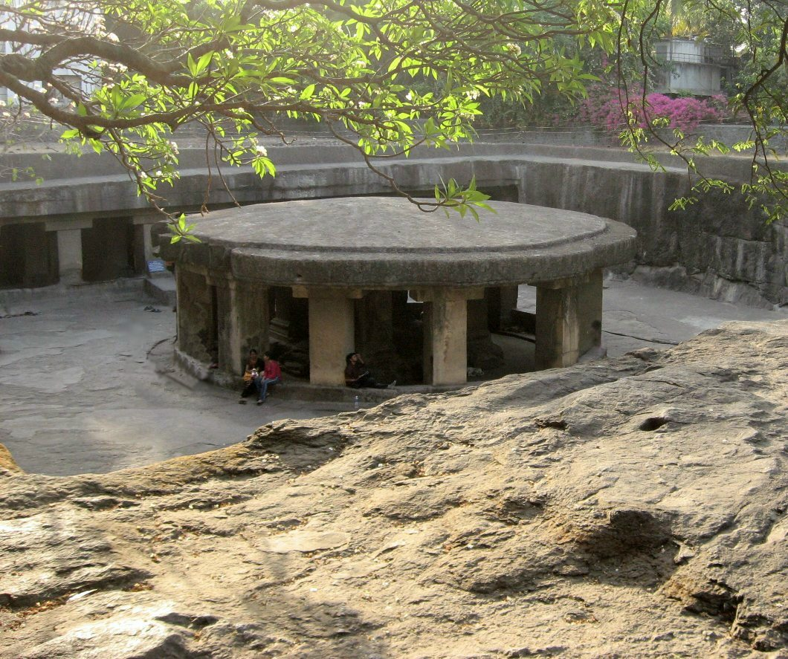

Famous locations of Pune
In the 18th century, the city was the seat of the Peshwas, the prime ministers of the Maratha Empire, and one of the most important political centres in the Indian subcontinent. The city was previously also ruled by the Ahmadnagar Sultanate, the Mughals and the Adil Shahi dynasty. Historical landmarks include the Lal Mahal, the Kasba Ganapati temple and Shaniwar Wada. Major historical events involving the city include the Mughal–Maratha Wars and the Anglo-Maratha Wars.
|
Shaniwar Wada a 13 storey palace of Peshwas was built by Bajirao-I, in the year 1736.It was head quarter of the Peshwas and it symbolizes Pune's culture.The structure was built giving security the highest priority. The main entrance is known as "Delhi Darwaja" & others have names like Ganesh, Mastani, Jambhal, Khidki. The statue of Bajirao-i on horse in front of Shniwarwada. In side one can see Ganesh Mahal, Rang Mahal, Aarsa Mahal, Hasti_Dant Mahal, Diwan Khana and fountain. A light and music show is conducted every day showing history of Peshwas. |
_20170831190942.jpeg) |
|
Occupying an area of about 19 acre, this palatial mansion was once used as a prison by the British for Mahatma Gandhi, Kasturba Gandhi and Mahadeo Desai, as well as Miraben, Pyarelal Nair, Sarojini Naidu and Dr Sushila Nayar. Though imprisoned during the Quit India movement, both Ba (as Kasturba Gandhi was fondly known) and Desai died of a heart attack in these premises. Their memorials, made of marble, still stand here. With Italian architecture and sculpted lawns, this grand building is now the headquarters of the Gandhi National Memorial Society. It was Sultan Muhammed Shah Aga Khan III who built this palace in 1892 as an act of charity for those who were drastically affected by the famine that had hit Pune at the time. |

|
|
The Pataleshwar Caves, also referred to as the Panchaleshvara temple or Bhamburde Pandav cave temple, are an 8th century rock-cut Hindu temple from the Rashtrakuta period located in Pune, Maharashtra, India. Dedicated to Shiva, it was a monumental monolithic excavation with a notable circular Nandi mandapa and a large pillared mandapa. It is a temple of three rock-cut cave sanctums, likely dedicated to Brahma-Shiva-Vishnu originally, but currently to Parvati-original Shiva-Ganesha. A garden now surrounds the site, new idols have been placed elsewhere in the complex. The interior of the caves have suffered damage from vandalism. Outside, the monument shows the effects of natural elements over the centuries. |
 |